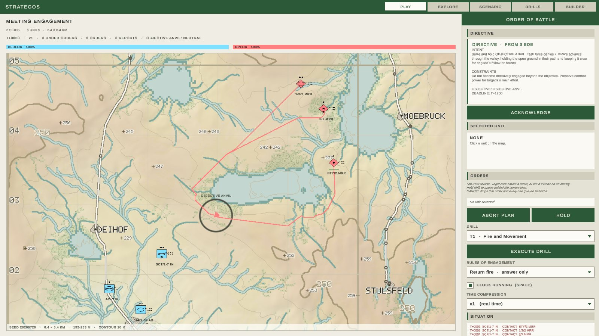

What this is
Strategos is a tactical command simulation game built around topographic maps, NATO APP-6D symbology, multi-echelon command, and adaptive AI. The player can grow from commanding a fireteam to controlling a theater-level combatant command.
This page is a status report, not a pitch. The project is mid-build: some systems are finished, one is actively in progress, and most of the roadmap hasn't started. That's stated plainly below, section by section.

master.
What's actually built
Phase 2 (the symbol system) is complete; Phase 1's map system is largely built. The map has a data model, a generation pipeline, a 2D topographic renderer and a 3D drape (a heightfield mesh textured with the 2D sheet). The app is a tab shell over five views: PLAY (a loaded scenario you can command), EXPLORE (a symbol-library browser and a pannable, zoomable map inspector), SCENARIO (map settings with a 2D or 3D preview), DRILLS (the TTP binder, read-only) and BUILDER (the digit-by-digit symbol composer).
The sandbox is playable and units can fight. A scenario loads two sides onto generated terrain; units have capabilities and state; a fixed-step simulation carries orders down a command topic into per-unit queues, moves units by terrain-cost A*, resolves direct fire between them, and carries reports back up a situation topic. Select, order, engage, queue, abort and time compression all work; the live plan is listed order by order and can be cut at any entry; and the whole run is deterministic and replayable from the command log.
- Hold is a real order — a unit told to hold digs in over two minutes and takes half the incoming fire once it has.
- The ORBAT is a tree — a formation is a unit that owns subordinates, its state rolls up from them, and an order addressed to it decomposes one echelon per step.
- Units tire and units are green — training costs time before an order is acted on, fatigue costs capability and recovers with rest.
- A destroyed unit becomes a wreck that is neither commandable nor a contact, and the loss is recorded.
- The map pans and zooms, bounded by the echelon the player commands.
- Units also fight on their own initiative under rules of engagement, answer fire while marching, and withdraw when they are being destroyed. A green unit hesitates before acting on an order and is slower to report what it sees, so its commander works from an older picture.

Command scales with echelon — that's the actual hook
The echelon the player commands is not just a matter of scale. It determines how much of the command problem exists at all: at fireteam level there's no C2 problem, you are the unit and orders are instant; by battalion, subordinates are out of sight and reports mediate what you know; at corps and above you work from reports already stale and issue intent rather than instructions. That's the intended progression, and it's why later phases (communications degradation, order delay, intelligence fusion) are planned as one code path parameterised by echelon rather than features bolted on later.
| Symbol | Echelon | Typical strength |
|---|---|---|
| ○ | Fireteam / Crew | 2–4 |
| • | Squad | 9–13 |
| •• | Section | 8–13 |
| ••• | Platoon / Detachment | 30–50 |
| I | Company / Battery / Troop | 80–250 |
| II | Battalion / Squadron | 300–1,000 |
| III | Regiment / Group | 1,000–3,000 |
| X | Brigade / Combat Team | 3,000–5,000 |
| XX | Division | 10,000–20,000 |
| XXX | Corps | 20,000–80,000 |
| XXXX | Army | 100,000+ |
| XXXXX | Army Group / Front | multiple Armies |
| XXXXXX | Theater / Combatant Command | multiple Army Groups |
What isn't there yet
There is still no world in the 3D sense: the drape is a preview rendered into a UI card, not a playable space, and there is no game camera. Units still pass through each other — there is no collision, no zone of control and no facing. A destroyed unit becomes a wreck (not commandable, not a contact) and the loss is logged; reconstitution between operations is still open. Reflexes and a side-policy seam are not intelligence — nothing plans or manoeuvres yet. Campaign chains carry an ORBAT in data but cannot yet be started from PLAY. Indirect fire, logistics, terrain LOS and online play remain unbuilt.
Near-term focus is the First playable game milestone: explicit command controls, a command palette, and waypoints. See ROADMAP.md.
Roadmap
| Phase | Focus | Status |
|---|---|---|
| 0 — Foundation & Project Setup | Buildable Unity 6 project, repository structure, CI, base scenes, test framework. | Done |
| 1 — Topographic Map System | Zoomable heightmap terrain, contour overlays, terrain classification, LOS, fog of war, weather, grid systems. | Largely built |
| 2 — NATO APP-6D Symbol Library | Composable military symbol system: frames, affiliation, unit types, echelon indicators, modifiers, map rendering. | Complete |
| 3 — Unit & Echelon System | Hierarchical unit model, ORBAT system, commander assignment, equipment data, doctrine profiles, runtime unit state. | Built |
| 4 — Movement & Combat Engine | Terrain-aware movement, pathfinding, combat resolution, suppression, indirect fire, logistics, attrition, recovery. | Core done; depth open |
| 5 — Command & Control (C2) System | Orders, mission types, command delays, communication degradation, intelligence, reconnaissance, deception, doctrine templates. | Foundations in |
| 6 — Scenario & Campaign System | Scenario editor, historical scenario support, objective system, victory conditions, triggers, linked campaigns. | Partial — data ships |
| 7 — Game Modes | Solo vs AI, hotseat, online multiplayer, AI vs AI watch mode, replay playback. | Not started |
| 8 — AI System | Rule-based AI, reinforcement learning, transfer learning from historical battles/replays, genetic strategy evolution, AI personalities, model sharing. | Seam only |
| 9 — Online Services & Community | Accounts, matchmaking, leaderboards, scenario workshop, replay library, AI model hub, notifications, mod support. | Not started |
| 10 — Polish, Accessibility & Release | Audio, UI/UX, tutorials, accessibility, performance optimization, platform builds, legal review, 1.0 launch assets. | Not started |
See ROADMAP.md and docs/phases.md in the repository for the full task breakdown.